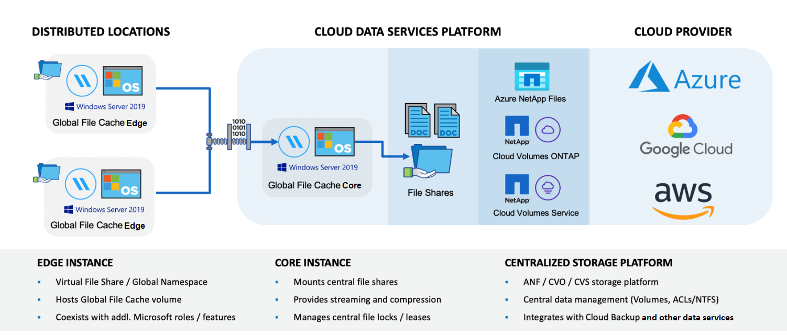

Versionshinweise
Versionshinweise
Erfahren Sie mehr über BlueXP Edge-Caching
 Änderungen vorschlagen
Änderungen vorschlagen
Mit Edge-Caching von NetApp BlueXP können Sie Silos aus verteilten File-Servern in einer zusammenhängenden globalen Storage-Umgebung in der Public Cloud konsolidieren. Dadurch wird ein global zugängliches File-System in der Cloud geschaffen, das alle Remote-Standorte so nutzen kann, als ob sie lokal wären.
BlueXP Edge Caching ist in zwei Implementierungsmodi verfügbar, die zu Ihrer Unternehmensarchitektur passen: Als integrierter Service in einer Cloud Volumes ONTAP Instanz (Cloud Volumes Edge Cache) oder als Add-on-Komponente für Ihre Enterprise Storage-Strategie (Global File Cache).
Überblick
Die Implementierung von BlueXP Edge Caching resultiert in einer einzelnen, zentralisierten Storage-Umgebung und nicht in einer verteilten Storage-Architektur, die lokale Anforderungen an Datenmanagement, Backup, Sicherheitsmanagement, Storage und Infrastruktur an den einzelnen Standorten erfordert.

Funktionen
BlueXP Edge Caching ermöglicht folgende Funktionen:
-
Konsolidieren und zentralisieren Sie Ihre Daten in die Public Cloud und profitieren Sie von der Skalierbarkeit und Performance von Storage-Lösungen der Enterprise-Klasse
-
Erstellen Sie einen einzigen Datensatz für alle Benutzer weltweit und nutzen Sie intelligentes Datei-Caching, um globalen Datenzugriff, Zusammenarbeit und Performance zu verbessern
-
Sie erhalten einen eigenständigen, automatisierten Cache, der vollständige Datenkopien und Backups überflüssig macht. Nutzen Sie lokales Datei-Caching für aktive Daten und senken Sie die Storage-Kosten
-
Transparenter Zugriff von Remote-Standorten über einen globalen Namespace mit zentraler Dateisperrung in Echtzeit
Erfahren Sie mehr über Edge-Caching-Funktionen und Anwendungsfälle von BlueXP "Hier".
Edge-Caching-Komponenten von BlueXP
BlueXP Edge-Caching besteht aus den folgenden Komponenten:
-
Management Server
-
Kern
-
Edge (Einsatz an Remote-Standorten)
Die Edge Caching-Kerninstanz von BlueXP ist mit den Dateifreigaben Ihres Unternehmens verbunden, die auf der gewünschten Back-End-Storage-Plattform (z. B. Cloud Volumes ONTAP, Cloud Volumes Service, Azure NetApp Files) und erstellt die Edge-Caching- „Fabric“ von BlueXP, die die Möglichkeit bietet, unstrukturierte Daten in einem einzigen Datensatz zu zentralisieren und zu konsolidieren, unabhängig davon, ob sie sich auf einer oder mehreren Storage-Plattformen in der Public Cloud befinden.

Unterstützte Storage-Plattformen
Die unterstützten Storage-Plattformen für BlueXP Edge-Caching unterscheiden sich je nach gewählter Implementierungsoption.
Automatisierte Implementierungsoptionen
BlueXP Edge Caching wird durch folgende Arten von Arbeitsumgebungen unterstützt, wenn sie mit BlueXP implementiert werden:
-
Cloud Volumes ONTAP in Azure
-
Cloud Volumes ONTAP in AWS
-
Cloud Volumes ONTAP in Google Cloud
Mit dieser Konfiguration können Sie die gesamte serverseitige Bereitstellung von BlueXP Edge Caching mit Edge Caching implementieren und managen, einschließlich des BlueXP Edge Caching Management Server und des BlueXP Edge Caching Core.
Optionen für manuelle Implementierung
Die Edge Caching-Konfigurationen von BlueXP werden auch von Cloud Volumes ONTAP, Azure NetApp Files, Amazon FSX für ONTAP Systeme und Cloud Volumes Service auf Google Cloud unterstützt. Lösungen vor Ort sind auch auf NetApp AFF und FAS Plattformen verfügbar. In diesen Installationen müssen die serverseitigen Komponenten des Edge-Caching von BlueXP manuell konfiguriert und implementiert werden, anstatt BlueXP zu nutzen.
Siehe "NetApp Global File Cache User Guide" Entsprechende Details.
Funktionsweise von BlueXP Edge Caching
Das Edge Caching von BlueXP erstellt eine Software-Fabric, die aktive Datensätze an Remote-Standorten weltweit zwischenspeichert. Geschäftliche Benutzer haben somit einen transparenten Datenzugriff und eine optimale Performance auf globaler Ebene.

Die in diesem Beispiel referenzierte Topologie ist ein Hub-and-Spoke-Modell, wobei das Netzwerk von Remote-Zweigstellen/-Standorten auf einen gemeinsamen Datensatz in der Cloud zugreift. Die wichtigsten Punkte dieses Beispiels sind:
-
Zentralisierter Datastore:
-
Public-Cloud-Storage-Plattform der Enterprise-Klasse, wie Cloud Volumes ONTAP
-
-
BlueXP Edge-Caching-Fabric:
-
Erweiterung des zentralen Datenspeichers an die Remote-Standorte
-
BlueXP Edge Caching Core-Instanz für das Mounten auf Unternehmens-File Shares (SMB)
-
BlueXP Edge Caching Edge-Instanzen werden an jedem Remote-Standort ausgeführt.
-
Stellt an jedem Remote-Standort einen virtuellen Dateifreigabe bereit, der Zugriff auf zentrale Daten ermöglicht.
-
Hostet den Intelligent File Cache auf einem benutzerdefinierten NTFS-Volume (
D:\).
-
-
Netzwerkkonfiguration:
-
Multi-Protokoll-Label-Switching (MPLS)-, ExpressRoute- oder VPN-Konnektivität
-
-
Integration in Active Directory-Domänendienste des Kunden.
-
DFS-Namespace für die Verwendung eines globalen Namespace (empfohlen).
Kosten
Die Kosten für die Nutzung von BlueXP Edge Caching hängen von der von Ihnen gewählten Installationsart ab.
-
Bei allen Installationen müssen Sie ein oder mehrere Volumes in der Cloud implementieren (z. B. Cloud Volumes ONTAP, Cloud Volumes Service oder Azure NetApp Files). Daraus entstehen Gebühren vom ausgewählten Cloud-Provider.
-
Bei allen Installationen müssen Sie zudem zwei oder mehr Virtual Machines (VMs) in der Cloud implementieren. Daraus entstehen Gebühren vom ausgewählten Cloud-Provider.
-
BlueXP Edge Caching Management-Server:
In Azure wird dies auf einer D2S_V3-VM oder einer gleichwertigen (2 vCPU/8 GB RAM) mit 127 GB Standard-SSD ausgeführt
In AWS wird dies auf einer m4.Large oder einer gleichwertigen Instanz (2 vCPU/8 GB RAM) mit 127 GB Allzweck-SSD ausgeführt
In Google Cloud wird dies auf einer n2-Standard-2-Instanz oder einer äquivalenten Instanz (2 vCPU/8 GB RAM) mit 127 GB Allzweck-SSD ausgeführt
-
BlueXP Edge-Caching Core:
In Azure wird dies auf einer D8S_V4 oder einer äquivalenten VM (8 vCPU/32 GB RAM) mit 127-GB-Premium-SSD ausgeführt
In AWS wird dies auf einer m4.2xlarge- oder äquivalenten Instanz (8 vCPU/32 GB RAM) mit 127 GB AllzweckSSD ausgeführt
In Google Cloud wird dies auf einer n2-Standard-8-Instanz oder einer äquivalenten Instanz (8 vCPU/32 GB RAM) mit 127 GB Allzweck-SSD ausgeführt
-
-
Bei der Installation mit Cloud Volumes ONTAP (den vollständig über BlueXP implementierten unterstützten Konfigurationen) gibt es zwei Preisoptionen:
-
Bei Cloud Volumes ONTAP Systemen zahlen Sie 3.000 US-Dollar für jede Edge Caching-Instanz von BlueXP pro Jahr.
-
Als Alternative können Sie für Cloud Volumes ONTAP Systeme in Azure und GCP das Cloud Volumes ONTAP Edge Cache Paket wählen. Mit dieser kapazitätsbasierten Lizenz können Sie für jede 3 tib erworbene Kapazität eine einzelne BlueXP Edge Caching Edge-Instanz implementieren. "Hier erfahren Sie mehr".
-
-
Bei der Installation mit den manuellen Bereitstellungsoptionen ist die Preisgestaltung unterschiedlich. Eine allgemeine Einschätzung der Kosten finden Sie unter "Berechnen Sie Ihr Einsparungspotenzial" Oder wenden Sie sich an Ihren NetApp Solutions Engineer, um mehr über die besten Optionen für Ihre Implementierung in einem Unternehmen zu erfahren.
Lizenzierung
BlueXP Edge Caching umfasst einen softwarebasierten License Management Server (LMS), mit dem Sie Ihr Lizenzmanagement konsolidieren und Lizenzen für alle Core- und Edge-Instanzen mithilfe eines automatisierten Mechanismus bereitstellen können.
Wenn Sie Ihre erste Core-Instanz im Datacenter oder in der Cloud implementieren, können Sie diese Instanz als LMS für Ihr Unternehmen festlegen. Diese LMS-Instanz ist einmal konfiguriert, stellt eine Verbindung zum Abonnementdienst (über HTTPS) her und validiert Ihr Abonnement mit der Kunden-ID, die unsere Support-/Operations-Abteilung bei Aktivierung des Abonnements bereitstellt. Nachdem Sie diese Bezeichnung erstellt haben, verknüpfen Sie Ihre Edge-Instanzen mit dem LMS, indem Sie Ihre Kunden-ID und die IP-Adresse der LMS-Instanz angeben.
Wenn Sie zusätzliche Edge-Lizenzen erwerben oder Ihr Abonnement verlängern, aktualisiert unsere Support-/Operations-Abteilung die Lizenzdetails, beispielsweise die Anzahl der Websites oder das Enddatum des Abonnements. Nachdem das LMS den Abonnementdienst abgefragt hat, werden die Lizenzdetails automatisch auf der LMS-Instanz aktualisiert und gelten für Ihre GFC Core- und Edge-Instanzen.
Siehe "NetApp Global File Cache User Guide" Weitere Details zur Lizenzierung.
Einschränkungen
Die in BlueXP unterstützte Version des Edge Caching von BlueXP (Cloud Volumes Edge Cache) setzt voraus, dass die als zentraler Storage verwendete Back-End-Storage-Plattform eine Arbeitsumgebung sein muss, in der Sie einen einzelnen Node oder ein HA-Paar von Cloud Volumes ONTAP in Azure, AWS oder Google Cloud implementiert haben.
Andere Storage-Plattformen werden derzeit nicht durch BlueXP unterstützt, können jedoch über ältere Implementierungsverfahren implementiert werden. Diese anderen Konfigurationen – globaler File-Cache mit Amazon FSX für ONTAP-Systeme, Azure NetApp Files oder Cloud Volumes Service für Google Cloud – werden durch die älteren Verfahren unterstützt. Siehe "Global File Cache: Überblick und Onboarding" Entsprechende Details.